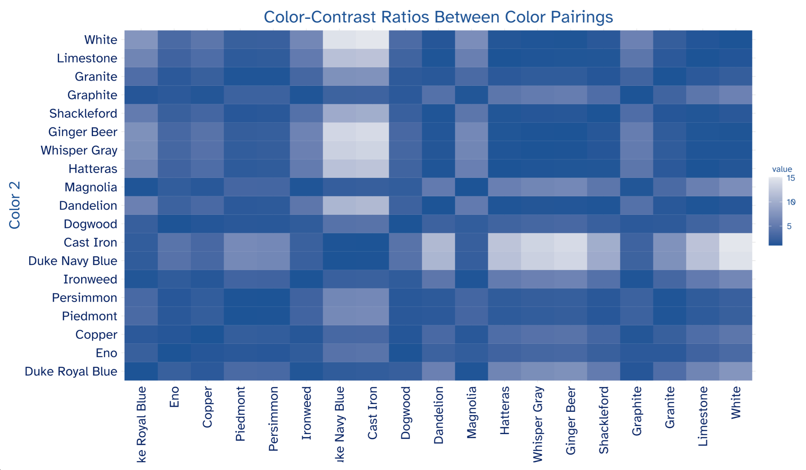

| Color 1 | Color 2 | Contrast Ratio |
|---|---|---|
| Dandelion | Cast Iron | 11.059041 |
| Dandelion | Duke Navy Blue | 10.785676 |
| Cast Iron | Piedmont | 6.698114 |
| Duke Navy Blue | Piedmont | 6.532546 |
| Cast Iron | Persimmon | 6.494391 |
| Duke Navy Blue | Persimmon | 6.333858 |
| Dandelion | Duke Royal Blue | 5.661465 |
| Cast Iron | Eno | 4.385449 |
| Duke Navy Blue | Eno | 4.277046 |
| Piedmont | Duke Royal Blue | 3.428972 |
| Dandelion | Copper | 3.376002 |
| Persimmon | Duke Royal Blue | 3.324680 |
| Cast Iron | Copper | 3.275781 |
| Duke Navy Blue | Copper | 3.194808 |
| Dandelion | Eno | 2.521758 |
| Eno | Duke Royal Blue | 2.245047 |
| Piedmont | Copper | 2.044738 |
| Persimmon | Copper | 1.982548 |
| Cast Iron | Duke Royal Blue | 1.953388 |
| Duke Navy Blue | Duke Royal Blue | 1.905103 |
| Dandelion | Persimmon | 1.702860 |
| Copper | Duke Royal Blue | 1.676973 |
| Dandelion | Piedmont | 1.651068 |
| Piedmont | Eno | 1.527350 |
| Persimmon | Eno | 1.480895 |
| Copper | Eno | 1.338749 |
| Persimmon | Piedmont | 1.031369 |
| Cast Iron | Duke Navy Blue | 1.025345 |
2 Methods
2.1 Color Sources
The office of University Communications provides an official color guide for the Duke brand. The color palette is intended to both bolster the brand of the University, as well as ensure cohesion among all official content (“Colors,” n.d.a). The primary colors of the official palette are Duke Royal Blue and Duke Navy Blue. It is highly encouraged that one of these colors is present in any Duke official project, as they are reflective of the Duke brand. The color guide also details an extended palette, which includes an additional 18 secondary and tertiary colors. Colors such as Copper, Eno, Ironweed, Persimmon, and Cast Iron are in the extended palette. University Communications urges the use of this extended palette for, “graphic accents, typography, backgrounds, [and] call-to-action buttons” (“Colors,” n.d.b). For each color in the palette, users can access the following information:
Color Name
Pantone Matching System (PMS)
Hex Code (HEX)
Cyan, Magenta, Yellow, and Key (CMYK) Color Model
Red, Green, Blue Color Model
We will primarily interact with the Hex codes for these colors in this project, shown in Table 2.1. Hex codes are a hexidecimal (base 16 numbering system) format for representing the amount of RBG in a particular shade (Rouse 2021). Additionally, Hex codes are recognized as the best color system for HTML and CSS formats; therefore, their use will be advantageous for data visualization in publication and web browser contexts.
| Name | Hex Code |
|---|---|
| Duke Royal Blue | #00539B |
| Duke Navy Blue | #012169 |
| Copper | #C84E00 |
| Persimmon | #E89923 |
| Dandelion | #FFD960 |
| Piedmont | #A1B70D |
| Eno | #339898 |
| Magnolia | #1D6363 |
| Prussian Blue | #005587 |
| Shale Blue | #0577B1 |
| Ironweed | #993399 |
| Hatteras | #E2E6ED |
| Whisper Gray | #F3F2F1 |
| Ginger Beer | #FCF7E5 |
| Dogwood | #988675 |
| Shackleford | #DAD0C6 |
| Cast Iron | #262626 |
| Graphite | #666666 |
| Granite | #B5B5B5 |
| Limestone | #E5E5E5 |
In 2018, Duke added a color accessibility guide to their branding site outlining how users could meet the Web Content Accessibility Guidelines (WCAG) 2.0 AA guidelines. The WCAG are internationally recognized standards on how to make web content more accessible to people with disabilities - including those with color vision deficiency. Their accessibility standards are principled on four tenets: Perceivable, Operable, Understandable, and Robust (“Introduction to Understanding WCAG 2.0 | Understanding WCAG 2.0,” n.d.). Duke’s accessibility guide illustrates a grid of every text-background color pairing in their palette and their respective compliance to the WCAG. There are four compliance categories specified:
AAA: highest compliance, text-background contrast ratio of 7+
AA: mid-range compliance, text-background contrast ratio of 4.5+
AA18: mid-range compliance with large text only (18pt or 14pt bold), text-background contrast ratio of 3+
DNP: does not pass compliance guidelines, text-background contrast ratio of less than 3
These compliance metrics will be an important resource for identifying color combinations that are accessible and selecting them for use in the duke package. The ratios provided by this guideline are intended for background and foreground combinations; however, they also apply to colors near and/or adjacent to one another. Duke’s inclusion of WCAG compliance information on their branding website is an important step towards accessibility in University content, but it would benefit from a built-in functionality that allows users to interact with it more easily. By incorporating these recommendations into the duke package, this project aims to empower users to more deftly create accessible Duke data visualizations.
2.2 Color Metrics
In selecting the optimal color palette, several color difference metrics were considered. Euclidean distance is a commonly used measure that calculates the difference in the RGB coordinates of two colors:
However, Euclidean distance can be a flawed metric because the standard RGB (sRGB) color space is perceptually uniform. This is because of irregularity in the sRGB color space, which causes evenly spaced hues to range in their perceptual similarity or difference (Madsen, n.d.a). In turn, color pairings that appear similar can have a greater Euclidean distance than those that appear different (Madsen, n.d.b). The CIE chromaticity diagram (see Figure 2.1) exhibits the color spectrum according to human vision. Its parabolic nature leads to irregularities in linearly scaled color scales (i.e., sRGB) and therefore weakens its efficacy in this context.

To accommodate these irregularities and center our color selection on human perception, we use the color contrast ratio as our primary metric. Color contrast is computed using “relative luminance” (“How to Calculate Colour Contrast” 2019). According to WCAG, relative luminance is the “relative brightness of any point in a color space, normalized to 0 for darkest black and 1 for lightest white” (“Web Content Accessibility Guidelines (WCAG) 2.0,” n.d.a). The formula for the color contrast ratio is as follows:
\[\frac{(L1 + 0.05)} {(L2 + 0.05)}\]
By dividing the the relative luminance of the lighter color (L1) by that of the darker color (L2), the color contrast ratio can range from a value of 1 (no contrast) to 21 (highest contrast) (“Web Content Accessibility Guidelines (WCAG) 2.0,” n.d.b). In line with the WCAG guidelines, we plan on only including color pairings in the package that meet a compliance level of AA18 or better.
It must be noted that given a total of 22 colors in the Duke official suite, our definition of the “optimal” palette may not be fully reliant on the color contrast ratio. The package is, at its core, representative of the Duke brand and should meet certain aesthetic expectations for those with and without color vision deficiency. The development of our color scales, specifically, incorporates a somewhat ad-hoc approach in order to strike a balance between accessibility and recognition of the Duke brand. In finding a color palette successful on both fronts, users can be confident that they are producing visualizations that are identifiably Duke-branded and accessible to a greater audience.
2.3 Package Development
As previously mentioned, package development posed a new challenge to the skill set I had learned through the Statistics curriculum. The R Packages (2e) text book served as an essential guide for learning, understanding, and eventually building the duke package. By clearly outlining the key structures of an R package, the functionality of the devtools package, and the importance of testing, I was well equipped to create duke.
The duke package offers four functions for users to make Duke branded visualizations in a colorblind friendly way.
2.3.1 theme_duke()
This function is largely inspired by the theme() function and its many derivatives. Its primary focus is to set the aesthetic elements for the visualization’s background and accessory features. These include the background color, grid lines, axis ticks, plot text, etc. With accessibility at the forefront of this project’s goals, it is essential that these choices lead to not only a visually pleasing result, but to one that is comprehensible as well. To do so, theme_duke() implements a minimalist design with a White background and grid lines removed. This decision reduces excessive noise in the plot, and instead allows audiences to focus on the story the data tells.
This design is complemented by deliberate text specifications that ensure plot readability. The function applies uniform coloring for text across the entirety of the visualization. All possible text features of a ggplot (title, axes, caption, legend, etc.) are in in Duke Navy Blue because of its strong contrast to the White background. It has a contrast ratio of 14.76 with White, which is the third highest among all colors in the Duke extended palette. Sizing of major text elements is also handled carefully to promote legibility. Readers with color vision impairment and/or low vision benefit from larger text settings (UNC School of Medicine, n.d.). Rather than manually increasing text size, theme_duke() encodes text sizing relative to the scale of the visualization. In turn, text adjusts according to users’ manipulations of plot dimensions, guaranteeing that text is both appropriately large and adequately fit to the visualization.
In addition, all text is in Atkinson-Hyperlegible font. Named after the founder of the Braille Institute, J. Robert Atkinson, the font uses “unambiguous, distinctive elements” to improve readability for individuals with vision impairment (“Atkinson Hyperlegible,” n.d.). Its use - both in the package and all complimentary documentation - is essential to promoting vision accessibility. Font implementation was one of the most difficult challenges throughout the package development process. R provides a limited suite of fonts, requiring users to download and load additional font families to their own system. On the individual-level, this is not too difficult. However, the process necessitates careful thought when building a package for community use. How can users integrate quickly access the package’s required fonts? What font implementation will require minimal memory? Why is being transparent with users important? We must closely consider these questions, among others, when adding font specification to duke.
Font specification in the duke package is an ongoing process and will be added soon. We want to ensure that our solution is stable on all systems; therefore, it is not published yet. In its current version, duke uses default ggplot2 fonts. We aim to have this feature complete prior to the defense.
2.3.2 scale_duke_continuous()
This function integrates Duke’s official color palette into geometric objects (geom) that use a continuous scale. Examples of commonly used plots implementing continuous geom objects include scatter plots, heat maps, and jitter plots. The primary challenge of adopting a continuous color scale in a color blind friendly way is the lack of color distinction that naturally occurs. Continuous color scales are defined by a low and high end of a two color gradient, where the data assumes colors within this range based on its respective value. However, continuous plots do not need complete distinction to be successful. It is often most important that readers can identify overall trends in continuous plots.
To optimize scale_duke_continuous() for users with impaired color vision, the continuous gradient must sequence from a dark to a light color (C. Wilke, n.d.). This is crucial because the data will be plotted beginning on the darker end of the scale, which has a higher contrast with our White background. Therefore, our gradient scale defines its low end as Duke Royal Blue and its high end as Hatteras. Duke Royal Blue has a color contrast ratio of 7.75 with White, making it sufficiently distinguishable. This, in tandem with Duke’s recommendation to include Duke Royal or Navy Blue in all communications, makes it the ideal choice for the low end of the scale. Hatteras is a light grey with subtle violet undertones, making it a pleasing complement to Duke Royal Blue (“Hatteras Gray,” n.d.). It is not highly distinct from the White background, but this is typical for the light extreme of continuous scales.
2.3.3 scale_duke_color_discrete() and scale_duke_fill_discrete()
To implement a discrete scale from Duke’s official color palette, users can add scale_duke_color_discrete() and scale_duke_fill_discrete() layers to their visualizations. These functions provide a discrete palette that can be used for the color and fill parameters of ggplot geometric objects. An appropriate discrete palette is essential to creating user-friendly visualizations because its colors indicate distinct categories that exist in the data. Whereas continuous plots typically exhibit overall trends, discrete plots must be able to delineate effectively between specific groups. A majority of geom objects can incorporate a discrete scale, including bar plots, histograms, and density plots.
As previously mentioned, this project observes color contrast ratio as the primary metric for determining colorblind friendly combinations. To identify visibly distinct colors for our discrete palette, we generate the contrast ratio between all pairing from the Duke color guide, with the addition of White since it is the background color. Figure 2.2 shows a heat map of color contrasts of all pairings. Lighter tiles in the heat map indicate pairings with higher contrast ratios, which are preferred.

Then, using these ratios, we craft a palette that promotes accessibility and the Duke aesthetic. A rule of thumb for discrete color scales is limiting to three to five colors. Additionally, once eight to ten categories or more are reached, matching colors to categories becomes too burdensome to be useful, even if the colors are distinguishable in principle (C. O. Wilke, n.d.). This lends to less busy plots that are more easily understandable. Thus, the goal of the our discrete palette is to carefully order colors so that those most used (those at beginning of palette) are most compliant. The result is the palette shown in Figure 2.3.

While not perfectly compliant with WCAG guidelines, the palette achieves our goal of optimizing colorblind accessibility and representing the Duke brand. As seen in Figure 2.4, a majority of our color pairings meet at minimum the AA18 rating, as indicated by lighter tiles.

The final palette includes the following colors: Duke Navy Blue, Piedmont, Copper, Duke Royal Blue, Eno, Persimmon, Dandelion and Cast Iron. Out the 28 distinct colors pairings that exist from this palette (excluding pairings of identical colors), 14 have a color contrast ratio of 3 or greater.This is compliant with WCAG’s AA18 rating, which specifies the use of larger text to be accessible. The colors from this palette will primarily be used to fill or color geometric objects in ggplot - rather than text - which offers complimentary features (ie. shape, larger areas, borders) that promote accessibility. Thus, we proceed under the assumption that an AA18 categorization is sufficient.
To ensure that this palette is accessible, we use the colorblindr package to visualize sample plots from the perspective of individuals with different types of color vision deficiency. There are several categorizations of CVD, yet the most common is red-green color blindness. As the name suggests, it makes it difficult for individuals to distinguish between red and green. Among this population, approximately 62.5% are deuteranomalous - meaning they have green-weak vision that makes green appear more red (Woods 2021a). Protonopia and deuteraonopia prevent individuals from distinguishing between red and green at all, yet are far less prevalent at only 12.5% of the red-green colorblind population each (Woods 2021b).
Red-green color blindness is by far the most common type, accounting for approximately 99% of those with CVD. For the purpose of creating a feasible project scope, we focus primarily on accessibility for those with red-green colorblindness. Future work on this project - or one with a similar goal - should investigate the feasibility of visualization accessibility for those with blue - yellow color blindness, monochromacy, etc.

2.4 Lessons Learned
The package development process can be daunting; I know it was for me. The excess of package dependencies, function documentation, and test scripts quickly becomes complex and overwhelming, making it all the more important to approach the process properly informed. Here are some lessons I learned throughout the process and takeaways for success in package development:
1. Package development is an iterative process, take your time. It is crucial that you approach each step in building your package with care - even those that are mundane. I often found myself skipping ahead to more attractive tasks like constructing a new function, leaving tedious but important tasks like documentation behind. This typically resulted in errors when checking my package. And they were increasingly harder to address when time had passed since I last worked on it. The process is far smoother when you continuously check for issues and address them immediately, rather than put them on the back-burner. It will save you from wasted time and frustration, so make sure to lean into the iterative style of package development.
2. The devtools package is your best friend. The devtools package is inherent to the package development process, but the way you use it can make all the difference. The R Package (2e) textbook was an integral resource for learning when and how to use the various functions of devtools. It details the order you should use its functions to load your package, create necessary documentation and vignettes, check for existing errors, and eventually build your package. While it may seem minor, memorize the shortcuts for the primary functions of devtools (load_all(), check(), document()). Over time, they will save you a significant amount of time and make your package development process more efficient.
3. Engage with existing resources online and collaborate with others. A common misconception in building new packages is that it is an entirely individual undertaking. I identified colorblind accessibility in the Duke data visualization as a unique and necessary problem to address, in turn, inspiring the duke package. At first, I thought that this meant I would and should construct the package on my own. This could not be further from the truth. As a package intended to be integrated into ggplot2 visualizations, duke shares many of the same functionalities as those in theme() and scale(). These existing resources demonstrated how to create the general structures of my functions, which then I could adapt to implement Duke’s official palette, a minimalist background aesthetic, etc. The “worth” of your package is not defined by its lack in crossover with other packages existing; therefore, make sure to engage with the resources at your disposal. I recommend you explore existing packages on GitHub, troubleshoot package issues by asking questions in the Posit Community, and find answers to difficult questions already asked on StackOverflow.